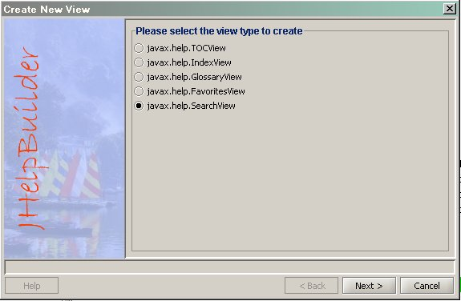
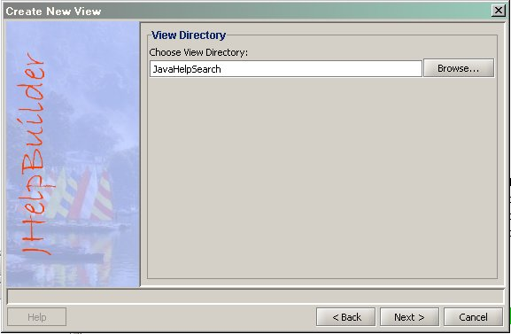
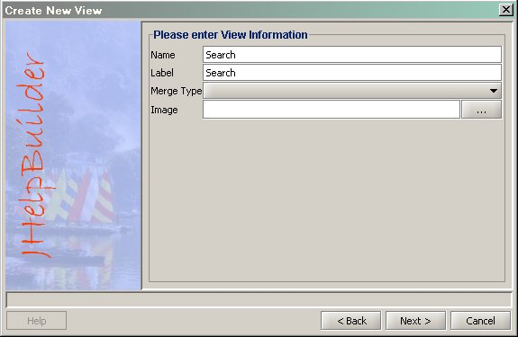
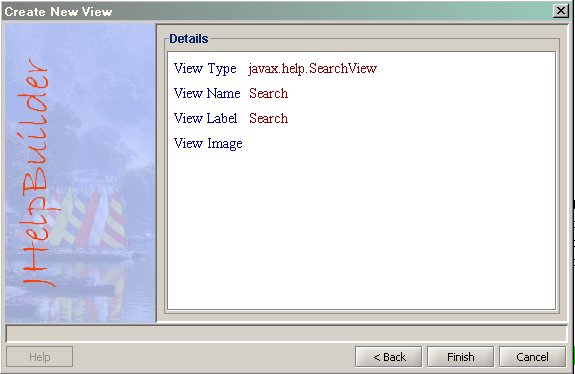
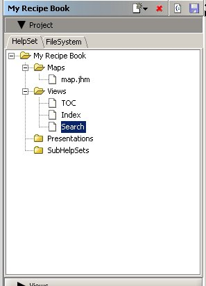
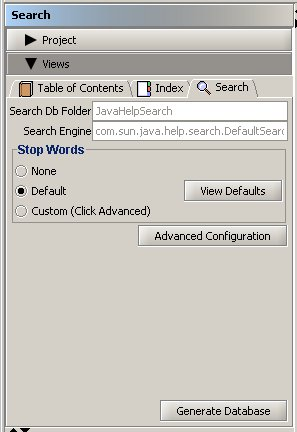

Now we will add a search view to our project.
To add , we go to the HelpSet tab.
- Go to the HelpSet tab.
- Click the button in the toolbar, and select the "New View" item.
- A View Creation Wizard will popup. Choose javax.help.SearchView on the 1st screen.
- 
- Click on Next.
- Enter a directory name for the search view. You can also use the "Browse" button to select a directory.[JavaHelpSearch]
- 
- Click on Next.
- In this screen, enter the view Name, and Label.[Search, Search]
- 
- The information you entered is displayed. You can go back and change any value. Click "Finish" to create the Search View.
- 
- The Search View is now displayed in the HelpSet tab and Views tab.
- 
- 
Generate a Search Database